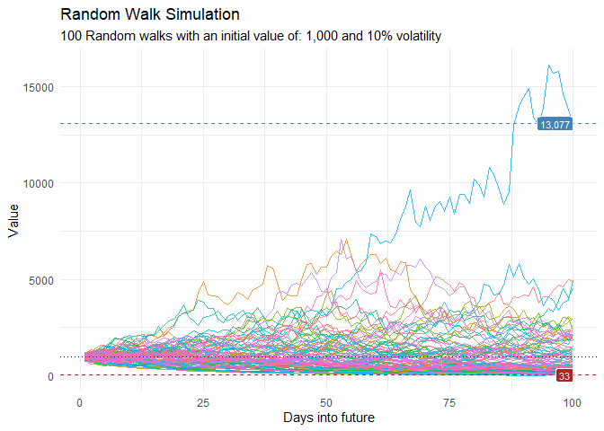

The goal of healthyR.ts is to provide a consistent verb framework for performing time series analysis and forecasting on both administrative and clinical hospital data.
Installation
You can install the released version of healthyR.ts from CRAN with:
install.packages("healthyR.ts")And the development version from GitHub with:
# install.packages("devtools")
devtools::install_github("spsanderson/healthyR.ts")Example
This is a basic example which shows you how to generate random walk data.
library(healthyR.ts)
library(ggplot2)
df <- ts_random_walk()
head(df)
#> # A tibble: 6 × 4
#> run x y cum_y
#> <dbl> <dbl> <dbl> <dbl>
#> 1 1 1 -0.0314 969.
#> 2 1 2 0.0576 1024.
#> 3 1 3 0.0249 1050.
#> 4 1 4 -0.0645 982.
#> 5 1 5 0.0271 1009.
#> 6 1 6 0.157 1167.Now that the data has been generated, lets take a look at it.
df %>%
ggplot(
mapping = aes(
x = x
, y = cum_y
, color = factor(run)
, group = factor(run)
)
) +
geom_line(alpha = 0.8) +
ts_random_walk_ggplot_layers(df)
That is still pretty noisy, so lets see this in a different way. Lets clear this up a bit to make it easier to see the full range of the possible volatility of the random walks.
library(dplyr)
library(ggplot2)
df %>%
group_by(x) %>%
summarise(
min_y = min(cum_y),
max_y = max(cum_y)
) %>%
ggplot(
aes(x = x)
) +
geom_line(aes(y = max_y), color = "steelblue") +
geom_line(aes(y = min_y), color = "firebrick") +
geom_ribbon(aes(ymin = min_y, ymax = max_y), alpha = 0.2) +
ts_random_walk_ggplot_layers(df)